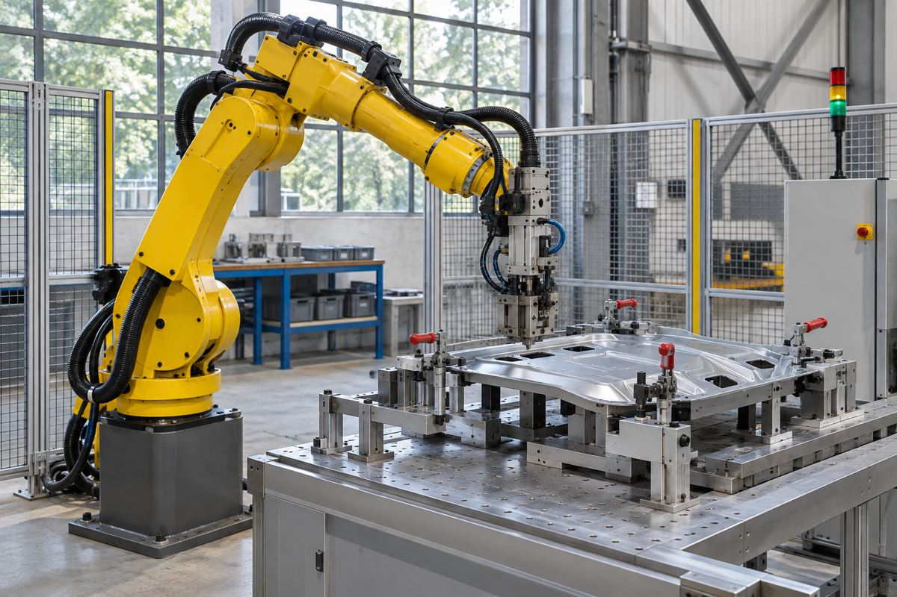

전자기기 / EXPLAINED
ASUS, 갤럽 로봇을 메인보드 부속품 포장에 시험
15개 부품을 20초 안에 포장하는 작업이 첫 검증 대상이다. 고객 시험은 2027년 계획이다.

ASUS가 11월 13일 로봇 갤럽의 첫 적용 작업을 공개했다. 그룹의 전자제품 제조 서비스 공장에서 메인보드 부속품 15개를 포장하는 공정이다. 회사가 제시한 목표는 20초 안에 성공률 99.5%다. 사람이 맡을 때의 기준과 맞춰 보는 목표로 설명했다. 공개된 자료에는 전체 시험 횟수나 실제 성공률이 없어, 목표를 달성했다는 실적으로 볼 수 없다.
ASUS는 메인보드와 PC를 판매하며 이번 개발은 그 전자제품 생산 환경에 맞닿아 있다. 현재 갤럽은 고정된 받침 위에서 두 팔을 쓰고, 바퀴를 달아 이동하는 형태는 이후 계획이다. 이미 사람에 맞춰 설계한 작업대와 부품 상자를 이용하려는 구상이다. 사람이 쓰는 공정에 맞춘다고 공장 안에서 혼자 이동하거나 여러 작업을 즉시 바꿔 수행한다는 뜻은 아니다. 공개된 첫 과제는 정해진 위치에서 작은 부품을 골라 포장하는 일이다.
회사 설명에 따르면 포장 대상 중에는 투명한 얇은 봉지에 든 작은 부품이 있다. 봉지가 반사하는 빛이나 부품이 겹친 상태는 카메라로 위치를 찾는 작업에 영향을 줄 수 있다. 로봇은 위치를 확인하는 것 외에도 올바른 부품을 집고 놓아야 한다. 첫 시도가 실패했을 때 부품을 다시 놓거나 공정을 멈추는 시간도 생산 속도에 들어간다. 평균 작업 시간만 제시하면 긴 지연이나 재작업이 얼마나 자주 생겼는지 알기 어렵다.
회사는 장면을 보고 작업 순서를 나누는 계획 단계와 이를 검사하고 필요하면 다시 계획하는 감독 단계, 집고 놓는 동작과 실제 팔을 움직이는 제어 단계를 설명했다. AI가 다음에 무엇을 할지 정하는 기능과 모터가 힘과 위치를 빠르게 조절하는 기능은 다른 역할이다. 작업자의 동의를 얻어 머리에 장착한 카메라로 작업 방법을 기록해 학습에 쓴다는 설명도 담겼다. 회사 자료는 데이터 사용과 학습 방법을 소개하지만 작업장 안전 검증 결과를 제시하지 않았다.
편집부는 99.5%라는 목표를 이해하려면 성공 정의와 반복 횟수가 필요하다고 본다. 예를 들어 200회에서 199회 성공은 수치상 99.5%지만, 잘못 집은 부품 하나를 작업자가 바로 고쳤는지, 상자를 폐기했는지에 따라 현장의 부담은 달라진다. 특정 작업대를 대상으로 한 결과가 다른 조명이나 다른 포장재에도 유지되는지도 별도의 검증이 필요하다. 한 번의 시연과 교대 내내 반복되는 공정은 요구하는 기록이 다르다.
20초가 연속해서 유지된다고 가정하면 한 작업대에서 시간당 180개를 처리하는 계산이 나온다. 이는 휴식과 재시도, 부품 보충이나 공정 전환을 모두 빼고 3600초를 20초로 나눈 값이다. 회사는 시간당 실제 생산량을 발표하지 않았다. 현장에서는 처리량을 계산할 때 속도뿐 아니라 작업을 시작할 수 있었던 시간과 검사를 통과한 완성 수량도 필요하다.
프로그램은 2026년 초 시작했고 자체 로봇 손과 이동형 구성을 개발할 계획이라고 회사는 밝혔다. 컴퓨텍스 2027 시연과 2027년 고객 시험, 2028년 하반기 시장 공급이 일정상 서로 다른 단계다. 가격, 고객 현장의 설치 조건, 목표를 달성한 데이터는 미공개다. 당장 확인되는 변화는 실제 제조 작업을 첫 평가 대상으로 정했다는 점이다.